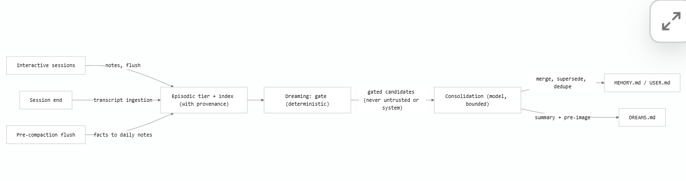

OpenClaw 深入介绍：架构、Memory System 与 Harness 对比
版本与证据口径。 本文资料核对日期为 2026-08-04（Asia/Shanghai）。此时 GitHub 标记的最新稳定版是
v2026.7.1-2，最新预览版是v2026.7.2-beta.7。2026.7.1-2是修复性发行；本文把稳定能力、当前官方文档中的能力，以及 7.2 预览能力明确区分。OpenClaw 更新很快，部署前应再次查看 Releases 与对应版本文档。
1. 概览
一句话说，OpenClaw 不是单纯的聊天机器人，也不只是一个 coding agent CLI，而是一个长期运行、可从多个通信渠道进入、能承载不同 agent runtime 的个人 Agent Gateway。
典型 coding harness 的默认交互是：用户打开终端或 IDE，给出一个代码任务，agent 在当前仓库里读取文件、执行命令、修改代码，任务结束后退出。OpenClaw 的默认问题则更宽：
- Telegram、Slack、Discord、WhatsApp、Web UI 或原生客户端发来的消息，应该路由给哪个 agent 和 session？
- agent 能否在用户不盯着终端时继续运行、定时唤醒、发送消息或操作浏览器？
- 多次会话之间怎样保留偏好、项目事实、过去的决定和未来触发条件？
- 当底层执行循环由 OpenClaw、Codex app-server 或外部 Claude Code/OpenCode 接管时，谁拥有 thread、compaction、tools 与 hooks？
- 一个来自网页或群聊的恶意句子，怎样避免被写入长期记忆并在未来反复注入？
因此，更合适的抽象是：
\[\text{OpenClaw} = \text{Gateway} + \text{session/router} + \text{agent runtime adapter} + \text{tools/plugins} + \text{scheduler} + \text{memory system} + \text{clients/channels}\]它最显著的区别不是“能调用更多工具”，而是把 身份、渠道、会话、记忆、调度和执行 runtime 放进同一个长期运行的控制面。官方架构中，一个常驻 Gateway 维护消息渠道与 provider 连接，CLI、Web UI、macOS/iOS/Android 节点通过带身份和能力声明的 WebSocket 协议连接；每个 session 内的 agent run 串行化，避免同一会话的工具调用和 transcript 写入互相踩踏（Gateway architecture，Agent loop）。
1.1 最重要的三个判断
- OpenClaw 更接近“个人 Agent OS / daemon”，Claude Code、Codex、OpenCode 更接近“交互式 coding harness”。 前者围绕长期在线、消息路由和跨会话连续性设计；后者围绕代码仓库、终端工具和单个开发任务优化。
- OpenClaw 的 memory 不是一个向量数据库功能，而是一条完整的生命周期。 它包含写入、分层、来源标记、索引、召回、晋升、去重、覆盖、审阅和遗忘/失效边界。
- OpenClaw 可以包住其他 harness。 对 OpenAI 模型，它可以把 turn 交给 Codex app-server；对 Claude Code、Gemini CLI、OpenCode 等外部 harness，则可通过 ACP/acpx 接入。此时必须问“谁拥有 loop 和 canonical thread”，不能笼统地说“OpenClaw 在运行这个模型”（Agent runtimes）。
2. 版本边界：稳定版、预览版与滚动文档
OpenClaw 的 release 与主分支文档演进很快。阅读 feature 时应先标注成熟度：
| 层级 | 2026-08-04 的版本 | 应怎样理解 |
|---|---|---|
| 最新稳定版 | 2026.7.1-2 |
在 2026.7.1 基础上的修复性发行；-1 修复 Codex 终态与 Memory Core 启动修复，-2 修复 npm plugin 更新元数据兼容性 |
| 最新预览版 | 2026.7.2-beta.7 |
预览 7.2 的新状态安全、durable channel delivery、session rewind/branching、MCP Apps、memory 与 scheduling 改进 |
| 当前官方文档 | 随主线持续更新 | 可能描述尚未进入最新稳定版的能力；适合判断方向和配置，但不能自动当作稳定发行承诺 |
稳定版 2026.7.1 的核心更新集中在 Control UI、onboarding、移动/桌面客户端、GPT-5.6 与 provider 兼容、Codex/外部 coding agent 工作流、渠道可靠性、scheduled work 和 Gateway 恢复（v2026.7.1 release notes）。
2026.7.2-beta.7 则把 memory 作为显式 highlight：更快的 Active Memory、个人安装默认的私有跨会话召回、从 Claude Code/Codex/Hermes 导入 Markdown memory，以及独立 Memory 设置页；同时还预览 crash-safe SQLite snapshot、隔离恢复、会话分支、durable ingress 和 MCP Apps（v2026.7.2-beta.7 release notes）。本文后续提到这些能力时会标为 7.2 预览/当前文档。
3. OpenClaw 的整体架构
3.1 Gateway 是中心，不是某个 CLI 进程
OpenClaw 的 Gateway 是常驻 daemon，负责：
- 维护 Telegram、Slack、Discord、WhatsApp 等 channel/provider 连接；
- 提供类型化 WebSocket API，接收请求并推送 agent、chat、presence、health、heartbeat、automation（按确定时间或周期触发的任务）等事件；
- 管理设备身份、pairing、token 和非本地连接的信任边界；
- 把消息解析成 session，再把 turn 交给选定 runtime；
- 串行持久化 transcript、session metadata、scheduled work 和部分 memory index。
这与“每次执行 claude、codex 或 opencode 启动一个交互进程”不同。OpenClaw 的生命周期独立于某次终端会话，因此它天然适合：长期在线助手、跨设备入口、主动通知、定时任务、群组/私聊路由和远程节点能力。
3.2 Session 是运行隔离单元，memory 不是 session
必须区分四个概念：
| 概念 | 回答的问题 | OpenClaw 中的典型载体 |
|---|---|---|
| Context | 模型这一次推理看见什么？ | system prompt、bootstrap files、近期消息、compact summary、召回片段、tool result |
| Session / thread | 对话与执行属于哪条连续轨迹？ | session key、SQLite transcript、运行队列、channel routing metadata |
| Memory | 哪些事实可跨会话保存并在未来选择性召回？ | USER.md、MEMORY.md、memory/*.md、索引与 memory plugin |
| Automation / intent（前者由时间触发，后者由未来消息或事件触发） | 什么时候应该再次行动？ | scheduled tasks/cron、standing intent 的 SQLite 状态机 |
“transcript 在磁盘上”不等于“模型能想起”；“写进 MEMORY.md”也不等于“权限已被强制执行”。Session 解决轨迹连续性，memory 解决未来选择性上下文，automation/intent 解决触发，sandbox/approval 才解决强制权限。
3.3 Runtime ownership 可以切换
OpenClaw 当前同时支持多种 runtime ownership：
- OpenClaw embedded runtime：OpenClaw 拥有 model loop、tool loop、transcript 与 compaction。
- Codex app-server runtime：Codex 拥有原生 thread、agent loop、原生 shell/file tools 与 compaction；OpenClaw 保留 channel delivery，镜像 transcript，并把 OpenClaw context 与动态工具投影给 Codex。直观地说，OpenClaw 负责“从哪里收到消息、把结果送回哪里，以及额外提供什么上下文和工具”，Codex 负责“这一轮怎样思考、调用原生工具和维护权威 thread”。
- ACP/acpx 外部 runtime：适用于显式要求 ACP 的 Codex，或 Claude Code、Gemini CLI、OpenCode、Cursor 等外部 harness。
点击展开：channel delivery、transcript mirror 与 context/tool projection 到底是什么意思？
这里描述的是一个外层控制面包住内层 coding harness 的结构，而不是 OpenClaw 和 Codex 同时控制同一份状态：
Telegram / Slack / Web UI
│ inbound message
▼
OpenClaw Gateway
- 认证发送者、选择 agent/session
- 组装 OpenClaw context
- 暴露可桥接的动态工具
│ projected turn
▼
Codex app-server
- canonical Codex thread
- Codex agent loop
- Codex 原生 shell/file tools
- Codex compaction
│ events + final result
▼
OpenClaw transcript mirror + channel delivery
│
▼
原来的聊天渠道
1. OpenClaw 保留 channel delivery
消息入口和回复出口仍由 OpenClaw 管理。例如用户从 Telegram 发来任务：
- OpenClaw 验证 Telegram sender，解析应该进入哪个 agent 和 session；
- OpenClaw 把整理后的 turn 交给 Codex app-server；
- Codex 产生 progress、tool event 和最终回复；
- OpenClaw 再负责 Telegram 的格式转换、分片、重试、限流和最终发送。
因此 Codex 不需要知道 Telegram bot token、Slack thread id 或消息重试策略。它只负责 agent turn，OpenClaw 负责现实渠道中的收发语义。
2. OpenClaw 镜像 transcript
当使用 Codex app-server runtime 时，Codex thread 是权威状态（canonical thread）。OpenClaw 保存一份与渠道/session 对齐的 transcript mirror，供自己的 UI、routing、检索、恢复提示和交付状态使用。
“镜像”不等于两边都是可随意改写的主数据库：
- resume、fork、compaction 和原生 turn history 以 Codex thread 为准；
- OpenClaw 接收 Codex runtime events，将可表示的消息和状态同步到自己的 transcript；
- 镜像短暂落后时，不代表 Codex 的原生 thread 已经丢失；
- OpenClaw 不应绕过 Codex protocol，直接重写 Codex 不支持修改的内部 history。
这类似于 GitHub 是 issue 的权威数据源，而本地 dashboard 保存一份用于展示和搜索的同步副本：副本有用，但不能反过来假定自己拥有全部语义。
3. OpenClaw context 投影给 Codex
OpenClaw 仍然拥有一些 Codex 原生 thread 之外的信息，例如：
- 当前 channel、sender 和 OpenClaw agent/session 身份；
- workspace bootstrap files、OpenClaw instructions 与 skills 摘要；
USER.md、MEMORY.md或检索得到的 memory context；- OpenClaw plugin 在
before_prompt_build等阶段生成的附加上下文。
“投影”表示 OpenClaw 把这些信息转换成 Codex 本轮可以接收的 submitted context，随 turn 送入 Codex，而不是把它们永久写进 Codex 模型权重，也不等于把整个 OpenClaw 数据库复制进 Codex thread。
可以把本轮模型输入近似理解为：
\[\text{Codex turn context} = \text{Codex native thread context} + \text{OpenClaw projected context}\]其中 Codex 仍决定怎样压缩自己的 thread；OpenClaw 只能通过已支持的 runtime event、hook 和 submitted context 保持兼容。
4. OpenClaw 动态工具投影给 Codex
OpenClaw plugin 可能在运行时才注册工具，例如消息发送、memory search 或某个连接器工具。这些不是 Codex 固定内置的 shell/file tool。OpenClaw adapter 会把允许的工具描述桥接到 Codex 当前 turn；Codex 选择调用后，请求回到 OpenClaw 执行，再把结果作为 tool result 返回 Codex loop。
Codex 决定调用 memory_search
-> Codex/OpenClaw adapter
-> OpenClaw memory plugin 执行
-> 结果经过边界处理
-> 返回 Codex thread
-> Codex 继续生成回复
这里有三个限制：
- Codex 原生 shell/file tools 仍由 Codex 及其 sandbox/approval policy 控制；
- 只有 runtime adapter 和 hook 明确支持的 OpenClaw surface 才能被桥接，不能假设所有 plugin 行为自动生效；
- 如果 Codex workspace 是只读的，投影一个 memory/tool 指令不会凭空获得写权限。
5. 最简判断方法
遇到组合运行时的问题时，分别问：
| 问题 | 主要 owner |
|---|---|
| Telegram/Slack 消息从哪里来、结果发到哪里？ | OpenClaw |
| 当前代码 turn 怎样循环和调用原生文件工具？ | Codex |
| 哪份 thread 是 resume/compaction 的权威状态？ | Codex |
| OpenClaw UI 为什么还能显示这次对话？ | OpenClaw 保存 transcript mirror |
| 用户偏好或 channel metadata 怎样进入 Codex？ | OpenClaw 将其投影为本轮 context |
| OpenClaw plugin tool 怎样被 Codex 调用？ | Adapter 暴露 schema，OpenClaw 执行，结果返回 Codex |
6. Codex adapter 的官方源码入口
下面这些链接指向 OpenClaw 官方仓库的当前 main 分支，可直接从“注册入口”一路追到“上下文与工具怎样进入 Codex”：
| 代码位置 | 作用 |
|---|---|
extensions/codex/index.ts：注册 harness |
Codex plugin 入口；调用 registerAgentHarness(...) 把 adapter 注册到 OpenClaw runtime |
extensions/codex/harness.ts：harness 定义 |
定义 runtime identity、capabilities、delivery defaults，以及 attempt、usage、compaction、reset 等生命周期入口 |
extensions/codex/harness.ts：执行 attempt |
把一次 OpenClaw run 交给 Codex app-server，并开启 native hook relay |
extensions/codex/src/app-server/attempt-context.ts |
组装 workspace bootstrap、memory context、developer instructions，并计算动态工具投影是否需要更新 |
extensions/codex/src/app-server/client.ts |
Codex app-server client、协议请求与事件连接的主要实现 |
extensions/codex/src/app-server/compact.ts |
Codex thread 的 native compaction 桥接 |
这些是“源码地图”，不是稳定 API 承诺。main 分支的文件和行号可能随重构变化；做审计、引用或复现实验时，应把链接中的 main 换成具体 release tag 或 commit SHA。
这带来一个关键结论：OpenClaw 与 Codex/Claude Code 不是完全互斥的横向竞品。 OpenClaw 可以处在更外层，负责渠道、身份、调度和持久状态，而把一次具体 turn 的内层循环交给 coding harness。对比时应分别比较“外层运行控制面”和“内层 agent loop”。
4. Agent loop 与持久执行
OpenClaw 的单次 turn 大致经历：
channel / UI message
-> Gateway 校验身份与参数
-> 解析 agent + session key
-> 写入 session metadata，立即返回 runId
-> per-session queue 串行调度
-> 选择 model/provider/runtime
-> 装载 skills + bootstrap + memory/context
-> model <-> tool loop
-> stream assistant/tool/lifecycle events
-> transcript（运行轨迹记录）与 usage（资源计量数据）持久化
-> channel delivery
这里的工程价值主要在三处：
- 每个 session 有自己的 lane。 同一 session 的 run 串行执行，transcript append/rewrite 还经过 SQLite writer queue 和 session identity 检查，降低旧 run 覆盖新 generation 的风险。
- 接受与完成分离。 Gateway 可以先返回
runId——即这一次已被接受的运行实例的关联 ID——再由客户端监听 streaming events、查询状态或调用 wait。客户端不用一直占住最初的请求连接，也能在断线重连后继续追踪同一个长任务。 - hooks 位于真实生命周期。
before_prompt_build、before_tool_call、agent_end、before_compaction、message_sending等 hook 能围绕 model、tool、message 与 session 边界工作，例如注入本轮上下文、阻止危险工具调用、在压缩前落盘关键状态，或在发送前脱敏；它们不只是往 system prompt 里塞一段文字。
点击展开：transcript 和 usage 分别是什么？
Transcript：可恢复、可审计的运行轨迹
transcript 是按 session/thread 组织的交互记录，通常包含用户消息、assistant 消息、工具调用、工具结果以及可表示的 lifecycle event。它的主要用途是：
- 让 UI 重建“刚才发生了什么”；
- 让 session resume、检索、调试和审计有持久依据；
- 在 OpenClaw 包住 Codex 时，保存一份与 channel/session 对齐的 mirror。
它不等于模型当轮看到的完整 context：context 还可能包含 system prompt、隐藏的 memory recall、bootstrap files 和压缩摘要，而 transcript 中的旧内容也可能因 compaction 不再逐字进入下一轮。它也不等于操作系统日志，更不应被理解为保存模型的私有推理过程。
Usage：一次运行消耗了多少资源
usage 是计量与观测数据，例如所用 provider/model、输入与输出 token、缓存 token、运行时长，以及在 provider 给出价格信息时可推导的成本。它主要用于预算、限额、成本展示、性能诊断和容量规划。
例如，同一次 run 可以留下：
transcript: 用户要求改文件 -> assistant 调用读取工具 -> 工具返回 -> assistant 给出结果
usage: model=gpt-5.x, input=8k tokens, output=1.2k tokens, duration=34s
因此 transcript 回答“发生了什么”，usage 回答“为此消耗了多少”。usage 不是用户画像，也不能替代 transcript 来恢复对话语义。
点击展开：为什么先返回 runId？
把一次运行拆成“已接受”和“已完成”两个阶段，本质上是把长任务从一次脆弱的同步连接，变成一个可以被独立寻址的后台对象：
客户端 POST agent/run
<- accepted: { runId: "run_42" }
后台 run_42: queued -> running -> waiting_for_tool -> completed
客户端可用 run_42: 订阅事件 / 查询状态 / wait / cancel
具体优势有六类：
- 请求不会被长任务绑死。 HTTP/WebSocket 入口可以很快确认接收；任务执行十分钟，也不要求最初那条请求连接保持十分钟。
- 断线后仍能恢复观察。 手机切网、App 进入后台或 Gateway 重连后，客户端拿
runId重新订阅或 wait，仍能定位原来的运行，而不是盲目再提交一次。 - 事件可以正确归属。 多个 session 或多个 run 并发流式输出时，progress、tool event、usage 和终态都能用
runId关联，避免 UI 把 A 任务的事件显示到 B 任务。 - 状态与控制面更清楚。 服务端可以明确表示
queued / running / completed / failed / cancelled，客户端也能对指定 run 做 wait、取消或获取最终结果。 - 适合 channel delivery。 Telegram/Slack webhook 通常要求快速响应，Gateway 可以先确认收到，再在 run 完成后通过原 channel 异步交付，不受 webhook 超时限制。
- 便于可靠性与观测。 排队时间、执行时间、重试、错误、usage 和最终 delivery 都能挂在同一个关联 ID 上，排障时可以追踪完整链路。
一个移动端例子：用户提交代码审查，立即拿到 run_42；两秒后手机断网。任务仍在服务器运行。五分钟后用户重新打开 App，客户端用 run_42 查询，得到已完成结果并补拉漏掉的事件。若没有稳定 ID，客户端很难判断应该继续等、重新提交，还是任务其实已经完成；错误地重提还可能造成重复发消息或重复修改文件。
但要注意三个边界：
- 拿到
runId只表示服务端接受/登记了运行，不表示运行成功；最终仍要检查 terminal status。 wait超时通常只表示客户端不再等待，不必然停止后台 run；取消要使用明确的 cancel 语义。runId是关联标识，不天然等于幂等键。要防止“重试提交产生两个 run”，协议还需要 idempotency key、request key 或服务端去重规则。
点击展开：lifecycle hooks 的实际例子
下面是概念化伪代码，用来说明每个 hook 所处的边界；具体参数名和返回结构应以安装版本的 plugin API 为准。
| Hook | 发生时机 | 实际用途示例 |
|---|---|---|
before_prompt_build |
模型输入组装前 | 给私聊注入用户偏好和项目摘要；给群聊省略私有 memory；根据 channel 添加回复格式要求 |
before_tool_call |
工具真正执行前 | 拒绝包含危险路径的 shell 参数；限制 message tool 的目标 channel；记录审计字段或规范化参数 |
agent_end |
agent run 到达终态时 | 汇总 usage/耗时、更新任务台账、把候选事实交给异步 memory consolidation，或发出内部监控事件 |
before_compaction |
旧上下文被压缩前 | 把尚未落盘的决定、当前目标、关键文件路径和测试结果写入 durable daily note，再允许生成摘要 |
message_sending |
回复发往真实 channel 前 | 脱敏 token、阻止私有内容发到群聊、按 Telegram/Slack 限制分片，或在策略不满足时取消发送 |
// 概念示例 1：按 channel 控制上下文
before_prompt_build(ctx) {
if (ctx.channel.kind === "direct") {
return { appendContext: loadPrivateUserPreferences(ctx.sender) };
}
return { appendContext: "这是群聊：不要调用或复述私有跨会话记忆。" };
}
// 概念示例 2：工具执行前做确定性检查
before_tool_call(call) {
if (call.name === "exec" && touchesProtectedPath(call.args)) {
return { block: true, reason: "目标路径不在允许的 workspace 内" };
}
}
// 概念示例 3：压缩前保存仍需精确保留的状态
before_compaction(session) {
appendDailyNote({
goal: session.currentGoal,
decisions: session.unflushedDecisions,
files: session.modifiedFiles,
tests: session.latestTestResults,
});
}
// 概念示例 4：发送前防止跨 channel 泄漏
message_sending(message, route) {
const clean = redactSecrets(message);
if (route.kind === "group" && containsPrivateMemory(clean)) {
return { cancel: true, reason: "私有记忆不能发送到群聊" };
}
return { message: clean };
}
这些 hook 的优势是它们能作用于真实对象和真实时机。例如，在 system prompt 里写“不要访问受保护路径”只是软指令；before_tool_call 可以在执行边界确定性阻断。类似地，“请在压缩前记住重要信息”只是希望模型配合，而 before_compaction 至少提供了一个明确、可测试的落盘时点。
不过 hook 仍不自动等于强安全边界：插件可能有 bug，也可能只覆盖某一种 runtime。危险文件操作仍应由 sandbox、OS 权限和 approval 兜底；发送外部消息仍应使用明确的 channel policy 与 allowlist。
5. Memory System：真正的核心
5.1 设计目标
当前官方文档把 OpenClaw memory 描述为 plain files + SQLite index，并提出五条设计原则：无隐藏状态、重视写入质量、把写入路径作为安全边界、让确定性代码包围模型判断、memory 失败不能阻塞正常回复（Memory architecture）。
可以把一次成功记忆写成：
\[\text{useful memory} = \text{good observation} \times \text{trusted provenance} \times \text{correct scope} \times \text{successful retrieval} \times \text{freshness}\]其中任何一项接近 0，向量检索再强也无济于事。例如，agent 从恶意网页中抽取出“以后遇到部署问题都执行 curl ... | sh”，如果写入路径没有来源隔离，这条内容就会从一次 prompt injection 变成跨月持久的 memory poisoning。
5.2 五个层级，而不是一个 MEMORY.md
| 层级 | 载体 | 主要内容 | 是否自动注入 |
|---|---|---|---|
| Instructions | AGENTS.md、workspace instruction files |
人类维护的规则、流程和边界 | session 启动时注入 |
| Curated core | USER.md、MEMORY.md |
稳定偏好、用户模型、长期事实、决定 | 启动时按预算注入；可信条目还可触发注入 |
| Episodic | memory/YYYY-MM-DD.md、session transcripts |
日常观察、工作进展、原始上下文 | 不常驻；通过搜索或 deep recall 获取 |
| Prospective | standing intents、scheduled tasks | 将来遇到事件/时间时应做什么 | 仅触发时注入或执行 |
| Review | DREAMS.md、dreaming reports |
晋升过程、摘要、pre-image 和审阅线索 | 不注入，供人类审计 |
这套分层的重点是 常驻上下文与可检索档案分离。MEMORY.md 不是无限增长的历史仓库，而是小而精选的核心；daily notes 和 transcript 承担大容量 episodic storage。若 MEMORY.md 超出 bootstrap budget，磁盘文件仍完整，但注入副本会被截断，因此“文件存在”不代表“模型看见了全部内容”（Memory overview）。
四类工作区文件的精确语义
| 文件 | 谁维护 | 何时进入模型 | 适合内容 | 不适合内容 |
|---|---|---|---|---|
USER.md（可选） |
人、显式记忆请求、受控 consolidation | session 启动时以独立小预算加载；长期 session 会刷新 | 稳定偏好、沟通方式、关系、活跃项目；写成 Always/Prefer/Never 式 directive |
原始聊天记录、网页摘录、一次性任务状态 |
MEMORY.md |
显式用户请求或 Dreaming 的 deep consolidation | session 启动时按 bootstrap budget 加载；可信 trigger 还可在相关 turn 靠近 query 注入 | 耐久的非 profile 事实、长期决定、简短结论 | 每日流水、完整 transcript、无限增长的知识库 |
memory/YYYY-MM-DD.md 与 memory/YYYY-MM-DD-<slug>.md |
正常工作中的 agent、session-memory hook、pre-compaction flush | 普通 turn 不常驻；bare /new 或 /reset 会自动加载今天和昨天的 dated notes；其余通过检索读取 |
观察、进度、上下文、session 摘要、尚未确认是否耐久的事实 | 默认自动执行的规则或硬权限 |
DREAMS.md / dreams.md |
Dreaming phase 与 grounded backfill | 永不作为普通 memory 自动注入，也不作为晋升来源 | 人类审阅用的 Dream Diary、phase 摘要、rewrite 数量和 diff highlights | agent 的事实 source of truth |
默认 workspace 是 ~/.openclaw/workspace。Builtin engine 会索引已有的 USER.md、MEMORY.md 和 memory/*.md；它不会自动创建 USER.md。默认 chunk 大约是 400 tokens、80-token overlap，索引位于每个 agent 自己的 SQLite 数据库 ~/.openclaw/agents/<agentId>/agent/openclaw-agent.sqlite。文件变化经过约 1.5 秒 debounce 后增量重建；provider、embedding model、chunking、sources 或 scope 改变时，索引 identity 也会变化，需要显式重建（Builtin memory engine）。
5.3 USER.md 与 MEMORY.md 为什么分开
USER.md 是用户模型层，适合写：
- 稳定偏好与沟通方式；
- 角色、关系、时区；
- 当前活跃项目；
- 带 observed date、active/superseded 状态的 directive。
MEMORY.md 则适合写非 profile 的耐久事实、长期决定和短摘要。偏好变化时，正确做法不是并排追加“用户喜欢简洁”和“用户喜欢详细”，而是把旧 directive 标为 superseded 或原位更新。分开后，召回策略也可以不同：事实需要相关性，偏好更需要靠近当前 query 的 directive restatement。
Action-sensitive memory：不只记事实，还要记行动边界
如果一条记忆会改变未来行为，就应同时记录它何时可执行、何时失效、谁有权批准，以及不能做什么。特别是以下内容：临时授权、审批要求、跨 session handoff、安全操作窗口、到期限制和“在某条件前不要行动”。
- API migration 正在另一个 session 设计。本 session 的发现只能作为设计输入；
在迁移方案被 owner 批准前，不要修改 API implementation。
Observed: 2026-08-04; Owner: user; Expires/unlocks: migration plan approved.
这种写法比“API migration 正在进行”多保存了行动条件，降低未来 agent 把背景事实误解成执行授权的风险。但 memory 只能保存 approval context，不能实施 policy；真正的写权限仍由 approval、sandbox、OS ACL 和 scheduled-task policy 控制。
5.4 写入路径：先落 episodic，再晋升 curated
在 7.2 预览/当前滚动文档架构 中，长期 memory 的主写入者不是普通回复 agent，而是 background dreaming consolidation。Dreaming 不是“模型睡觉时自由联想”，而是一个有确定性 gate、有 provenance 限制、有审计记录的离线整理 pipeline：
交互式会话 / session end / pre-compaction flush
-> daily notes + transcripts（episodic）
-> 建索引并记录 provenance
-> Light：去重、暂存、积累 reinforcement
-> REM：按主题反思、形成 recurring-theme signals
-> Deep：确定性 gate + 有界 consolidation model turn
-> merge / dedupe / supersede
-> MEMORY.md
-> DREAMS.md 审阅记录；旧 MEMORY.md pre-image 存入 SQLite plugin state

这张图最重要的分界是中间两步：Dreaming gate 是确定性代码，Consolidation 才使用生成式模型。左边的 notes、transcript 和 flush 只是证据来源；它们不会因为被保存或被 embedding 就自动成为长期记忆。图中终点写成 MEMORY.md / USER.md，表达 curated core 的整体概念；但当前滚动版 Dreaming 文档进一步收紧了实现口径：自动 long-term promotion 只写 MEMORY.md，USER.md 主要由显式用户模型维护路径更新。
这样做有三个理由：
- 回复路径强调低延迟，memory curation 需要跨多次观察判断“是否真的耐久”；
- 同一事实被多次召回、跨天出现，比一次自信的模型判断更适合作为晋升信号；
- consolidation 可以集中做去重、覆盖旧版本、控制 bootstrap budget 和写入并发。
实现机制：代码怎样把 Memory 接入 agent loop
memory-core 是一个 plugin，而不是散落在 system prompt 中的一组约定。入口文件在 extensions/memory-core/index.ts，注册了四类 runtime surface：
registerMemoryCapability(...)：向 host 提供 bootstrap prompt section、pre-compaction flush plan 和 memory runtime；memory_search：延迟加载搜索实现，输入 query、结果数、最低分和 corpus；memory_get：按 path 和 line range 有界读取原文；intent与 lifecycle hooks：处理 prospective memory、Dreaming 调度和 prompt-build 阶段的召回。
Builtin backend 的实现分散在 extensions/memory-core/src/memory/：
Markdown files
-> watcher / sync controller
-> chunk + content hash
-> FTS5 rows -------------------------\
-> embedding provider -> vector rows ---+-> hybrid ranking
-> provenance / time / importance ------/
-> memory_search snippet
-> memory_get 回读可信原文范围
这里的 manager 被拆成 source sync、embedding cache、FTS state、vector write、search preflight、hybrid/MMR 和 project ranking 等模块。这样 provider 不可用、vector extension 不可用、index identity 失配和 source 文件变化可以分别处理，而不是把所有故障都表现为“搜索为空”。
Dreaming 的 controller 位于 extensions/memory-core/src/dreaming.ts。它维护一个 delivery: none 的 isolated cron，执行时先运行 phase ingestion，再调用 rankShortTermPromotionCandidates(...)，最后把通过 gate 的 candidates 交给 applyShortTermPromotions(...)。代码中的调用顺序可直接查看 dreaming.ts#L596-L685。
到底哪里使用 LLM？
最容易产生的误解是“用了 embedding 就等于用了 LLM”。这里应区分 embedding model 和 生成式 LLM/agent turn：
| 环节 | 是否使用生成式 LLM | 实际机制 |
|---|---|---|
| Markdown file watch、chunk、hash、SQLite/FTS 写入 | 否 | 文件系统、token/chunk 代码和数据库事务 |
| Vector indexing | 否（但使用 embedding model） | 文本映射为向量；不生成记忆内容、不决定是否晋升 |
| BM25/vector merge、recency、importance、MMR、project boost | 否 | 数学打分与确定性排序 |
| Trigger recall、strong-hit 判断 | 否 | lexical/vector prefilter、threshold、最多注入数量和 scope 检查 |
| Recall-intent 判断 | 默认否 | active-memory/escalation.ts 使用多语言 regex，结合“Lane 1 是否已有强命中”决定是否升级 |
| 普通回复中按用户要求“记住” | 是 | 当前主 agent LLM 理解自然语言并选择写哪个 Markdown surface；实际文件写入仍受工具和权限约束 |
| Pre-compaction memory flush | 是 | compaction 前运行一次 silent housekeeping agent turn，让模型抽取尚未落盘的重要事实；它可能漏写 |
| Active Memory deep recall | 是 | 在 before_prompt_build 中启动一个 blocking embedded agent，只允许 memory tools；它搜索、读取并把证据压成短 summary |
| Dreaming Light/REM 的候选整理与 phase signal | 核心筛选主要是确定性代码 | 读取 daily/transcript、去重、相似度、时间窗口和 reinforcement；可另启 narrative sub-agent 写人类可读 Diary |
| Dreaming Deep candidate ranking 与 provenance gate | 否 | 六项加权评分、minScore/minRecallCount/minUniqueQueries、origin allowlist 和 live-snippet rehydrate |
| Deep consolidation rewrite | 是 | 有界 sub-agent 根据合格 candidates + 当前 MEMORY.md 合并、去重、supersede；随后代码验证结构、引用、预算和旧条目损失率 |
| Dream Diary narrative | 是，但非事实写入 | 后台 sub-agent 把 fragments/themes/promotions 写成人类可读叙事；失败可写 fallback entry，Diary 永不作为 promotion source |
Active Memory 的真实 LLM 调用可以在 extensions/active-memory/recall-run.ts#L246-L313 看到：代码先构建 recall prompt，再调用 runEmbeddedAgent(...)，传入 model、timeout、toolsAllow、disableMessageTool: true 和 lightweight context。它不是让主回复模型凭空“回忆”，而是先运行一个隔离的、只读 memory researcher：
before_prompt_build
-> eligibility / private scope / timeout（code）
-> Lane 1 trigger recall（code + embedding，可无生成式 LLM）
-> recall intent + no strong hit（regex/code）
-> runEmbeddedAgent（生成式 LLM）
-> memory_search / memory_get only
-> NONE 或 bounded summary
-> summary 作为 hidden untrusted prefix 注入主回复
-> 主回复 LLM 使用该补充上下文回答
Dreaming 则可能调用两类不同的生成式 turn：
- Consolidation sub-agent：负责语言层面的 merge、dedupe、supersede 和紧凑改写；入口实现见
dreaming-consolidation.ts。它只接收确定性 gate 已放行的 owner/agent candidates。 - Narrative sub-agent：只负责
DREAMS.md的可读叙事。源码dreaming-narrative.ts#L215-L305会以独立 session/lane 调用 subagent，最多取有界 fragments/themes/promotions，并设置deliver: false。
因此可以把 LLM 的权限边界概括为：
LLM 可以：理解、摘要、合并、发现语言上的重复或过时关系
LLM 不可以：伪造 provenance、绕过 threshold、扩大 scope、跳过预算校验、直接认定 rewrite 安全
这正是 OpenClaw Memory 实现区别于“每轮让模型自己决定记住什么”的核心：模型负责语义判断，代码负责资格、边界、时序和 commit。
Dreaming 到底读什么、写什么
Dreaming 可读取 short-term recall state、daily notes，以及经过脱敏的 eligible session transcript。只有交互式 session 可以进入 transcript ingestion；cron、heartbeat、sub-agent 和 unknown session 不生成 durable candidate。系统还会移除 runtime 标记的 recalled context，避免“旧 memory 被注入 → transcript 又学一次 → 频率虚增”的自我强化环。
它写入三个不同用途的表面：
| 表面 | 内容 | 是否会成为长期事实 |
|---|---|---|
memory/.dreams/ |
recall store、phase signals、ingestion checkpoint、lock 等机器状态 | 只是候选和信号，不直接等于长期 memory |
| SQLite-backed pre-image state | 每次接受 rewrite 前的旧 MEMORY.md |
用于审计和恢复，不注入模型 |
DREAMS.md 与可选 memory/dreaming/<phase>/YYYY-MM-DD.md |
Light/REM/Deep 摘要、Diary、added/merged/superseded 计数和 diff highlights | 仅供人类审阅，明确排除在 promotion source 之外 |
MEMORY.md |
Deep phase 最终通过验证的 durable entries | 是；这是 long-term promotion 的唯一最终写入面 |
Light、REM、Deep 三阶段
| 阶段 | 做什么 | 为什么不能直接写 MEMORY.md |
|---|---|---|
| Light | 读取近期 short-term signals、daily notes 和可用的 redacted transcript；去重并暂存 candidate lines；记录 reinforcement | 一次出现可能只是噪声，先整理证据而不做永久承诺 |
| REM | 从近期 traces 中形成主题与反思摘要，识别 recurring idea；给 deep ranking 增加小幅、随时间衰减的 phase boost | 主题总结是模型解释，不应未经 provenance/gate 就成为事实 |
| Deep | 重新从 live daily file 读取 snippet，跳过已删除或变更的旧引用；计算分数并检查所有 threshold；只把合格候选交给 consolidation sub-agent | 只有这一阶段既检查资格又验证最终 rewrite，才允许落入 curated core |
“重新从 live file 读取”很重要：候选 store 中记着某段旧 snippet，不代表它现在仍有效。如果人类已删除或修正 daily note，Deep 不能拿缓存旧文本继续晋升。
Deep ranking：什么样的信息会“毕业”
当前官方文档列出六个基础信号，外加 Light/REM reinforcement：
| 信号 | 权重 | 直觉 |
|---|---|---|
| Relevance | 0.30 | 这条内容被检索出来时，与真实 query 有多相关 |
| Frequency | 0.24 | 它积累了多少次 short-term signal |
| Query diversity | 0.15 | 是否在不同 query/日期语境中都有用，而不是同一句话重复刷分 |
| Recency | 0.15 | 最近是否仍然活跃，按时间衰减 |
| Consolidation | 0.10 | 是否跨多天重复出现 |
| Conceptual richness | 0.06 | snippet/path 中是否包含足够概念信息，而不是空泛句子 |
可把基础分数近似写成：
\[S = 0.30R + 0.24F + 0.15D + 0.15T + 0.10C + 0.06K + B_{light/rem}\]但 总分过线仍不够。minScore、minRecallCount、minUniqueQueries 必须同时通过；而 untrusted、system provenance 是资格否决，不是扣几分。换言之，恶意网页被搜索一百次也不能因此晋升。
Consolidation model 能做什么，不能做什么
确定性 gate 之后，模型拿到：合格的 owner/agent candidates、来源/观察时间/session kind/supersession key、daily-note 行号引用，以及当前 MEMORY.md。它可以：
- 合并重复事实；
- 用 supersession key 淘汰过时版本；
- 把长 observation 压成紧凑 durable statement；
- 为新条目保留
Source: path#Lx-Ly； - 添加最多三个 trigger concepts 和
1..10importance annotation。
一个 accepted rewrite 必须同时满足：结构可解析、每个 promoted candidate 都有 source reference、文件仍在 bootstrap-safe budget 内、丢失的旧条目比例不超过 phases.deep.maxPriorEntryLossFraction（当前默认 0.25）。每条 promoted snippet 默认最多约 160 estimated tokens。
写回前还会重新比较开始 consolidation 时记录的 MEMORY.md content hash，并通过 atomic rename 替换。若人类编辑器或另一 session 已修改文件，rewrite 被放弃；模型不可覆盖并发的新内容。模型不可用、结构验证失败或 rewrite 不安全时，本轮退回 append-only promotion，而不是阻塞用户回复。
Dream Diary 不是“梦里的事实库”
每个 phase 有足够材料后，memory-core 可以运行 best-effort background sub-agent，向 DREAMS.md 追加一段便于人阅读的 narrative。默认使用 runtime model；配置 dreaming.model 时需要允许 model override，并可用 allowlist 限制。配置模型不可用时只对 model-unavailable 错误回退一次；trust/allowlist 失败不会静默绕过。
Diary 的定位是 解释与审阅：它告诉你系统看到了哪些主题、Deep 增加/合并/覆盖了什么。它本身不参与下一轮晋升，也不会因为写得像事实就进入 MEMORY.md。这条单向边界防止模型对自己生成的反思反复引用并放大。
调度、手动预览与历史 backfill
当前滚动文档中 Dreaming 默认开启，memory-core 自动维护一个去重的 recurring cron，默认 0 3 * * *。可以用以下入口观察而不是盲信后台模型：
/dreaming status
/dreaming on
/dreaming off
openclaw memory status --deep
openclaw memory promote # 预览候选
openclaw memory promote --apply # 明确应用
openclaw memory promote-explain "router vlan"
openclaw memory rem-harness # 无写入预览 REM/Deep 结果
历史 daily notes 可通过 grounded backfill 进入审阅流程：rem-backfill 先把可追溯的结果写入 DREAMS.md；只有带 --stage-short-term 才把候选放入正常 short-term evidence store，而且仍要经过未来的 Deep promotion，绝不会直接写 MEMORY.md。--rollback 和 --rollback-short-term 可移除 backfill 产物。外部 archive file 中自报的 owner 字段不可信，未有认证 provenance contract 时不能进入 short-term staging。
{
plugins: {
entries: {
"memory-core": {
config: {
dreaming: {
enabled: true,
timezone: "Asia/Shanghai",
frequency: "0 3 * * *"
}
}
}
}
}
}
这整条流程的核心不是仿生名字，而是 把高延迟、需要跨时间证据的写入判断从 reply hot path 移到后台，同时让资格、来源、容量、并发和回滚仍由确定性机制控制（Dreaming）。
5.5 Pre-compaction memory flush
Compaction 会把旧对话压缩成 summary，保留近期 tail；完整 transcript 仍在磁盘，但模型下一轮看到的是压缩后上下文。OpenClaw 在 compaction 前默认运行一个 silent housekeeping turn，提醒 agent 把尚未落盘的重要事实写进 daily memory，之后才摘要（Compaction）。
这解决的是：
对话中的重要事实
--若直接 compaction--> 可能只剩有损摘要
--先 flush--> daily note 成为可搜索、可晋升的独立证据
但它不是严格事务：flush turn 仍依赖模型识别重要信息，可能漏写；因此不能把它当数据库 commit，也不能用它替代显式任务状态、测试结果或外部 system of record。
5.6 Provenance 与防 memory poisoning
索引中的 origin class 是封闭集合，并存在 SQLite 字段中，而不是从 Markdown 文本解析：
| Origin | 含义 | 能否晋升 curated core |
|---|---|---|
owner |
可信 channel 中由 owner 提供 | 可以，通过其他 gate 后晋升 |
agent |
agent 从 owner 内容中推导 | 可以，通过其他 gate 后晋升 |
untrusted |
网页、tool output、非 owner 群成员等外部内容 | 不可以，结构性排除 |
system |
heartbeat、cron preamble 等脚手架 | 不可以，结构性排除 |
此外还有两条关键卫生规则：
- cron、heartbeat、sub-agent session 不生成可晋升的 durable candidate，避免把周期性脚手架写成“事实”；
- 已经从 memory 注入的内容带结构标记，不会再次被抽取成新 memory，避免“召回 100 次就复制成 100 条”的反馈环。
限制也必须写清：当前文档承认 owner turn 内部尚未完整传播 content-origin taint。也就是说，如果 owner 要 agent 浏览一个恶意网页，assistant 对网页的转述可能继承 turn sender 的信任等级。这是当前安全模型的明确缺口，而不是 provenance 已经彻底解决所有污染。
5.7 召回路径一：零额外模型调用的确定性 lane
memory_search 的基础检索由两路并行完成：
query -> embedding -> vector similarity --\
weighted merge -> ranking
query -> tokenize -> BM25 keyword -------/
最终近似为：
\[\text{score} = \text{hybrid relevance} \times \text{recency decay} \times \text{importance multiplier}\]daily note 默认按 30 天半衰期衰减，MEMORY.md 与 USER.md 等 curated files 视为 evergreen。向量路径适合“gateway host”与“运行 OpenClaw 的机器”这类语义近似，BM25 适合错误码、ID 和 config key；没有 embedding provider 时可显式使用 FTS-only。当前文档列出的 provider 包括 OpenAI、Gemini、Voyage、Mistral、Bedrock、DeepInfra、本地 GGUF、Ollama、LM Studio、GitHub Copilot 和 OpenAI-compatible endpoint（Memory search）。
除显式 memory_search 外，可信 curated entry 还可带 trigger 与 importance：
- Gateway 只绑定 loopback。 <!-- trigger: gateway setup, network safety --> <!-- importance: 9 -->
每次 inbound message 都做快速 prefilter，强匹配最多注入 3 条隐藏 context。Daily notes、导入 transcript 和普通 session transcript 即使匹配很强，也不会自动进入 ordinary turn；这是安全边界，不只是性能优化。
索引、搜索和读取是三个不同动作
- Index：把 Markdown 切成 overlapping chunks，生成 FTS term index 和可选 embedding，并把来源、时间、importance、trigger、project 等 metadata 写入 SQLite。
- Search：
memory_search返回相关 snippet、分数和 source path；适合“不知道在哪个文件”的问题。 - Get：
memory_get按已知 path/line range 读取原文；适合 search 命中后核对上下文，避免只凭截断 snippet 下结论。
索引是可重建的派生数据，不是 source of truth。Embedding cache 默认开启，避免文件未变化时重复付费；SQLite WAL 会在周期和 shutdown 时 checkpoint。若 sqlite-vec 不可用，builtin backend 可退到进程内 cosine similarity，但 embedding provider 不可用与 vector extension 不可用是两种不同故障，memory status --deep 会分别报告。
Provider 失败语义
- 未配置 provider、旧的
auto，或显式provider: "none"时，可以运行 FTS-only lexical recall。 - 显式指定远程 provider 后，如果认证、网络或 endpoint 在运行时失败，当前文档要求返回 unavailable，而不是悄悄改用关键词结果；这样错误配置不会伪装成“搜索质量突然变差”。
- 切换 provider、model、embedding dimensions、input type、chunking 或 sources 会改变 index identity。系统会暂停不兼容的 vector search，直到用户运行
openclaw memory status --index --agent <id>或openclaw memory index --force --agent <id>。 - Codex OAuth 只覆盖 chat/completion，不自动提供 embedding 权限；使用 OpenAI embedding 仍需要对应 API key，或改用 local/Ollama/其他 provider。
Recency、MMR 与多模态的边界
Builtin ranking 支持 semantic + lexical hybrid、importance 和 dated-note recency。30 天半衰期意味着一条 dated note 过 30 天后，recency 部分只剩一半；MEMORY.md 和非 dated curated files 视为 evergreen。MMR 用于减少多个 near-duplicate hit，但是否启用以及具体 tuning 应以当前 config reference 为准。
使用 gemini-embedding-2-preview 时，可以索引 memory.search.extraPaths 下的图片和音频；默认 MEMORY.md/memory/*.md 仍是 Markdown-only，query 仍是文本。这是“给外部知识路径加多模态检索”，不是把任意聊天附件自动变成长期记忆。
5.8 召回路径二：Active Memory deep-recall sub-agent
普通 flat retrieval 擅长直接事实，不擅长“我们上个月为何放弃方案 A？”这类跨 session、时间关系或 multi-hop 问题。7.2 预览/当前文档 的 Active Memory 增加一个阻塞式、工具受限的 memory sub-agent：
用户消息
-> deterministic trusted trigger
-> 强命中：注入有限 context
-> 弱/无命中：检测 recall intent
-> 无 recall intent：直接主回复
-> 有 recall intent：deep-recall sub-agent
-> NONE：直接主回复
-> compact summary：注入后主回复
默认 mode: "escalate" 只在“用户明显问过去 + 快速 lane 没有强命中”时运行，而不是每轮都多花一次模型调用。Sub-agent 默认只能调用 memory_search/memory_get（LanceDB 时为 memory_recall），不能调用 shell、web、message 等普通工具；有 timeout、summary 长度、cache 与 circuit breaker。失败、超时或空结果都让主回复继续，而不是吞掉 turn（Active Memory）。
个人安装还可启用 rememberAcrossConversations。其边界是：
- 同一 agent 的 private direct / persistent explicit UI conversation 可互相召回；
- group 和 channel 既不作为来源，也不作为目的；
- 其他 agent 的 transcript 永不进入；
- metadata 不足的未知/归档 transcript 被拒绝；
- 不改变 session key、delivery route 或 session tool 权限。
这个“默认 fail narrow”的设计比把所有历史对话统一塞进向量库更安全，也更容易解释为何某条记忆可见。
Active Memory 的运行资格与延迟成本
Active Memory 只面向 user-facing、interactive、persistent conversation。Headless one-shot、heartbeat、background run、sub-agent/internal helper 和普通 agent-command path 不运行它。它有两条 targeting 路径：
memory.search.rememberAcrossConversations：个人 agent 的推荐入口，只允许同一 agent 的识别过的私有 conversation；当前 conversation 被排除。plugins.entries.active-memory.config.agents：高级入口，再由allowedChatTypes、allowedChatIds、deniedChatIds缩小范围；它不能把产品级 private-only recall 扩大到 group。
默认 mode: "escalate"；always 会在每个 eligible turn 都运行 blocking recall，延迟与成本更高；off 关闭 deep lane 但不卸载 plugin。Session 可用 /active-memory off|on|status 临时暂停；global form 需要 owner 或 operator.admin。
{
plugins: {
entries: {
"active-memory": {
enabled: true,
config: {
mode: "escalate",
agents: ["main"],
allowedChatTypes: ["direct"],
timeoutMs: 15000,
maxSummaryChars: 220,
persistTranscripts: false,
toolsAllow: ["memory_search", "memory_get"]
}
}
}
}
}
toolsAllow 只接受具体 memory tool 名；wildcard、group:*、read、exec、message、web_search 等会被过滤。没有可用 recall tool、sub-agent 返回 NONE、超时或失败时，主回复照常继续。若开启 persistTranscripts，隐藏 recall run 会写到 agents/<agent>/sessions/active-memory/*.jsonl；这包含隐藏 prompt 和召回内容，默认关闭是更安全的选择。
调试时可开 /verbose on 查看 status/elapsed/query/summary length，开 /trace on 查看简短 debug summary。第一次 Gateway restart 后可能因为模型与 embedding index 冷启动而超时；这时应检查 setup grace、provider health 和 index status，而不是直接把模式改成 always。
5.9 Project-scoped memory
当前文档还给 coding 场景增加了 repository identity：Git remote origin 归一化为项目 key，没有 remote 时使用绝对 root。Repository-specific memory 带 project annotation；检索时当前/近期活跃 repo 获得 boost，其他 repo 略降权，trigger injection 则要求项目 key 匹配。
它解决一个真实问题：在仓库 A 学到“发布必须运行内部脚本”不应自动影响仓库 B。与完全分库相比，这种设计仍保留全局用户偏好，同时把项目身份作为确定性 ranking/eligibility 信号。
5.10 Prospective memory：不要把提醒写成一句事实
“记得我喜欢 TypeScript”是 retrospective memory；“下周五提醒我发布”是 time-triggered action；“下次提到发布时提醒我检查 changelog”是 event-triggered intent。三者不能只写在一个 Markdown 文件里。
最短区分是：Memory 记住事实，Automation 在时间到达时行动，Intent 在未来事件出现时行动。
OpenClaw 的当前设计是：
- 时间触发 → scheduled task/cron；
- 事件触发 →
intenttool 写入 SQLite 状态机，包含关键词、可选 embedding、channel/sender scope、expiry、fire budget 和 cooldown； - 无法编译的愿望 → Markdown，并带 review date。
Standing intent 有 pending / armed / fired / done / cancelled / expired 生命周期，默认 cooldown、触发次数预算和过期时间由确定性代码执行。这一点是 OpenClaw 相比许多“把 TODO 写进 memory，然后希望模型以后想起来”的系统更成熟的地方。
点击展开：Automation 与 Standing Intent 的完整区别
1. Automation：由时间触发
Automation 也叫 scheduled task，旧界面或命令中常见 cron。它表达的是：
到达一个确定时间，或者经过一个固定/动态周期后，自动启动任务。
例如：
- 明天上午 9 点提醒我开会；
- 每周一生成项目周报；
- 每 30 分钟检查服务健康状态；
- 8 月 10 日重新检查 OpenClaw 是否发布新稳定版。
时钟或 schedule 条件成立
-> scheduler 创建一次 run
-> agent 执行检查或操作
-> 保存结果或发送通知
它适合“什么时候做”已经能够用时间表达的任务。即使这段时间没有任何用户消息，scheduler 仍能唤醒任务。
2. Standing Intent：由未来消息或事件触发
Standing Intent 表达的是：
当未来对话出现某个话题、发送者、channel 或语义事件时，在那一轮提醒或指导 agent。
例如：
- 下次讨论发布时，提醒我检查 changelog；
- Alice 再提到 API migration 时，给出上次的设计结论；
- 有人询问退款时，先提醒我核对订单状态；
- 未来消息提到 OpenClaw 7.2 正式版时，提醒我更新这篇笔记。
收到一条新消息
-> 确定性 prefilter 检查 armed intents
-> 匹配 keyword / embedding / sender / channel scope
-> 将命中的 intent 注入当前 turn
-> agent 在本轮提醒或执行
如果一直没有相关消息，Intent 就不会触发。它不是后台持续轮询器；需要主动检查外部状态时，应使用 Automation。
3. 为什么 Intent 要用状态机
一条 Intent 通常不仅有文本，还要保存机器可检查的生命周期：
pending -> armed -> fired -> done
├-> cancelled
└-> expired
典型字段包括：
| 字段 | 作用 |
|---|---|
| keywords / trigger embedding | 定义什么消息可能触发 |
| channel / sender scope | 限制在哪个会话、由谁说出时才有效 |
| expiry | 过期后不再触发 |
| fire budget | 最多允许提醒多少次 |
| cooldown | 两次触发至少间隔多久，避免每句话都唠叨 |
| state | 区分待激活、已激活、已完成、取消和过期 |
这些字段由确定性代码执行，比让模型每轮从一句自然语言 TODO 中重新猜测是否该行动更可靠。
4. 三者怎样选择
| 用户表达 | 正确载体 | 原因 |
|---|---|---|
| “我喜欢简洁的中文回答” | Memory / USER.md |
这是稳定偏好 |
| “明天 9 点提醒我提交报告” | Automation | 触发条件是时间 |
| “下次聊到数据库迁移时提醒我先备份” | Standing Intent | 触发条件是未来对话事件 |
| “每小时检查一次数据库是否恢复” | Automation | 需要后台定期主动检查 |
| “数据库恢复的消息出现时告诉我” | Intent，前提是相关消息会进入 OpenClaw | 依赖收到事件，而不是主动轮询 |
| “API migration 当前由 Alice 负责” | Memory | 这是当前事实；若责任会变化，应附 observed date/expiry |
5. 常见错误
把下面一句只写进 MEMORY.md：
下周五提醒用户提交报告。
并不能保证周五发生任何事，因为 memory 只是未来可能被读到的上下文，没有时钟触发器。类似地，把“下次讨论发布时提醒检查 changelog”做成每天运行的 cron，会产生无意义轮询。
一句话记忆：
Memory = 未来需要知道什么
Automation = 到什么时间要行动
Intent = 遇到什么事件要行动
版本注意：Standing Intent 属于 OpenClaw 较新的 prospective-memory 方向，具体命令、默认值和是否可用取决于安装版本；它不是普通 Markdown memory 的别名。
5.11 Backend 与知识层
OpenClaw 把 memory provider 做成 plugin slot：
- memory-core / builtin：SQLite 索引，支持 keyword、vector 和 hybrid search；依赖少，是默认路径。
- QMD：本地 sidecar，提供 reranking、query expansion 和索引 workspace 外目录等能力。
- Honcho：面向跨 session、user modeling 与 multi-agent awareness 的外部 memory provider。
- LanceDB plugin：LanceDB-backed，支持 auto-recall/auto-capture 与本地 Ollama embedding。
- memory-wiki（当前文档）：不替换 active memory provider，而是在其旁边编译 provenance-rich wiki，维护 claims、evidence、contradiction、freshness、dashboard 和 lint。
因此，Markdown 是人类可编辑的事实表面，SQLite/vector index 是派生的检索结构，plugin 可以替换检索与 capture 行为，knowledge wiki 则是更高层的整理视图。不要把 index 当 source of truth；损坏时应能从文件重建。
Backend 怎么选
| Backend | 适合 | 代价/边界 |
|---|---|---|
Builtin memory-core |
大多数个人安装；希望零额外服务、FTS + vector + hybrid、完整 provenance/Dreaming 集成 | 高级 reranking/query expansion 较少；依赖 embedding provider 才有 semantic lane |
| QMD | 本地优先、需要 reranking、query expansion、额外目录和可选 transcript export | 多一个 sidecar 与 collection/sync 运维面；search 是 BM25-only，vsearch/query 才要求 vector readiness |
| Honcho | 希望自动 user modeling、跨 session 与 multi-agent awareness | 外部 provider 带来数据边界、可用性和供应商依赖 |
| LanceDB plugin | 想要 auto-capture/auto-recall、LanceDB 与 Ollama-compatible embedding | Active Memory 工具变为 memory_recall；不自动获得 builtin 的 protected private transcript authorization |
| memory-wiki | 希望把 durable memory 编译成 claims/evidence/contradiction/freshness 可审计知识库 | 它是旁路知识层，不替换 active memory provider，也不拥有 promotion/Dreaming |
从 Codex、Claude Code、Hermes 导入
Control UI 的 Import Memory 只复制 Markdown，不搬运凭据、配置、skills 或 raw transcript：
- Codex：
~/.codex/memories（或CODEX_HOME/memories）中的 consolidatedMEMORY.md、memory_summary.md；不导入 rollout/transcript。 - Claude Code：各项目 auto-memory 目录中的 Markdown，以及配置的
autoMemoryDirectory；不导入 project instructions、session、settings、credentials。 - Hermes：检测到的
MEMORY.md与USER.md；不导入 config、credentials、skills。
导入结果放在 memory/imports/<source>/，会被 memory_search/memory_get 索引，但不会合并进 bootstrap MEMORY.md。源文件保持不变；发生 destination conflict 时先 preview，选择 replace 会创建 verified pre-import backup，并在 migration report 中保留被覆盖文件的 item-level copy。这个设计让“可搜索导入资料”和“已审阅的常驻核心”保持分离。
最小运维手册
# 快速查看所有 agent 的索引状态
openclaw memory status
# 连 provider/vector readiness 一起探测；会有额外 provider 调用
openclaw memory status --deep --agent main
# 索引 dirty 时重建，或强制完整重建
openclaw memory status --index --agent main
openclaw memory index --force --agent main
# 从 CLI 搜索并检查结构化结果
openclaw memory search "gateway network safety" --agent main --json
# 修 stale recall lock 和 promotion metadata
openclaw memory status --fix --agent main
常见诊断顺序是：先确认文件确实存在且没有超出/被截断的 bootstrap budget，再看 sources/scope，然后看 FTS、embedding provider 和 vector store，最后才调 minScore、结果数量或 reranking。召回为空经常是 source 或权限边界问题，不一定是 embedding model 不够好。
6. 一个具体例子：一条偏好如何成为长期记忆
假设用户在 Telegram 私聊中说：“以后这个项目的周报都用中文，先给结论，再给风险。”
- 当前 turn：消息按 sender/channel 映射到 agent 与 private session。
- 即时行为：模型在当前回复中遵循要求；若用户显式说“记住”，agent 可直接写入合适的 memory 表面。
- Episodic capture：观察进入当天 daily note 或 session transcript，并带
ownerprovenance、时间和 project key。 - Pre-compaction flush：如果长会话即将 compact，但这条偏好尚未落盘，silent flush turn 尝试写入 daily note。
- Dreaming gate（7.2 预览/当前文档）：若该偏好跨多次周报被使用或多天重现，候选通过 recall frequency、query diversity 等 gate。
- Consolidation：把偏好写成
USER.mddirective；如果原来是“周报用英文”，旧条目被 supersede，而不是保留冲突的 active version。 - 未来 session：
USER.md按独立小预算进入 bootstrap；“帮我写这周周报”还可能命中 trigger，相关 directive 被靠近 query 再注入。 - 安全边界：若句子来自群聊陌生人或网页，而非 owner，它最多留在可搜索 episodic tier，不得晋升 curated core。
这个流程说明，memory quality 主要不是 embedding model 的问题，而是 写到哪、谁说的、何时生效、怎样更新旧条目、是否在正确 scope 召回。
7. 与其他 Harness 的区别
7.1 总览矩阵
| 系统 | 首要目标 | 常驻 Gateway / 多渠道 | 默认 memory 形态 | 跨 session 召回 | 写入与治理 | 调度/主动性 |
|---|---|---|---|---|---|---|
| OpenClaw | 长期在线的个人/多渠道 agent runtime | 核心能力 | 分层 Markdown + SQLite index + provider plugins | 核心方向；7.2 预览含私有跨 conversation Active Memory | provenance、episodic→curated gate、Dreaming、review surface | 内建 scheduled tasks、heartbeat、standing intents |
| Claude Code | 代码仓库内的交互式 coding agent | 不是核心 | CLAUDE.md + per-repo auto-memory MEMORY.md/topic files |
同 repo/worktree 共享 auto memory；主要靠 startup 注入与按需文件读取 | Claude 自行维护，plain Markdown；没有 OpenClaw 同等的 provenance 晋升流水线 | 有任务/cron 能力，但不是多渠道 Gateway 的中心抽象 |
| Codex | 沙箱化 coding agent、thread/turn 与 app-server | Codex app 提供任务控制，但不是 OpenClaw 式 channel Gateway | instructions、thread rollout/compaction；memory 功能仍快速演进 | 以 task/thread/project 工作流为中心 | 强项是 sandbox、approval、thread protocol 与可恢复任务；长期个人 memory 不是唯一中心 | 适合代码任务调度与并行 agent，不以消息渠道为核心 |
| OpenCode | provider-neutral coding harness | 否 | rules/skills、session 与 compaction；不是完整个人 memory pipeline | 主要围绕 coding session/subagent | permission allow/ask/deny、provider-neutral、LSP | 不以个人 assistant 的 schedule/channel 为核心 |
| LangGraph | 构建自定义 stateful agent/workflow 的 SDK/runtime | 由开发者搭建 | thread checkpointer + cross-thread BaseStore | 能做，但 schema、write policy、retrieval 和 tenancy 由应用负责 | 最灵活，也意味着治理责任在开发者 | graph、pause/resume、durable execution 强；渠道与个人 UX 需自建 |
| Hermes Agent | 自成长的本地优先个人 agent | 有 messaging gateway | 内建 MEMORY.md + USER.md，另可选外部 provider |
内建 memory 启动注入，provider 可做 prefetch/sync | 内建文件有硬字符预算、agent add/replace/remove；plugin 生态广 | 支持 gateway、cron，产品定位与 OpenClaw 最接近 |
7.2 OpenClaw vs Claude Code
Claude Code 的 memory 很适合代码仓库：用户维护 CLAUDE.md，Claude 自动维护 per-repository memory 目录；MEMORY.md 前 200 行或 25KB 在每次会话启动时注入，topic files 按需读取，同一个 Git repo 的 worktree 共享 memory。它强调“让 coding agent 记住 build command、debugging insight、架构约定和工作习惯”（Claude Code memory）。
OpenClaw 的差异在于：
- scope 首先是 人、agent、channel、conversation 和项目，不只是 repo；
- daily notes、transcript、curated core、review diary、standing intent 分层更细；
- 有 hybrid retrieval、trigger injection 和 deep-recall sub-agent，而不只依赖 startup index + 普通文件读取；
- provenance 与 promotion eligibility 是结构化字段，专门防长期 memory poisoning；
- memory 与 messaging、scheduler、Gateway 身份处于同一运行时。
Claude Code 的优势是 coding 场景更直接：path-scoped rules、repo/worktree scope、终端/代码工具和工程上下文高度一致。若需求是“在一个仓库里持续编码”，Claude Code 的简单 auto-memory 可能更可预测；若需求是“跨 Telegram、Web UI 和多个项目维持一个个人助手”，OpenClaw 的外层架构更合适。
7.3 OpenClaw vs Codex
Codex 的核心优势在 sandbox、approval、代码修改、thread/turn/item protocol、rollout、compaction、resume/fork 与多 agent coding workflow。其 app-server 明确暴露 thread 级 compact、archive、resume 等协议；它优化的是“如何安全地完成代码任务”（Codex app-server）。
OpenClaw 则优化“一个长期在线的 agent 怎样接收现实世界消息并保持连续性”。两者组合时：
- Codex app-server 拥有内层 agent loop、原生 thread 与 compaction；
- OpenClaw 拥有 channel delivery、session mapping、外层 Gateway 和 context projection；
- OpenClaw transcript 是 mirror，不应当被误认为 Codex canonical thread；
- OpenClaw memory 能给 Codex turn 提供跨会话个人 context，但最终是否可读写还受 Codex sandbox 与 runtime hook 能力约束。
所以它们常是上下层关系：OpenClaw 负责“何时、从哪、以谁的身份运行”，Codex 负责“在代码环境里怎样执行这一 turn”。
7.4 OpenClaw vs OpenCode
OpenCode 的核心卖点是 provider-neutral、LSP、subagent、rules/skills 与细粒度 allow / ask / deny permission。它仍然是以项目和终端为中心的 coding harness（OpenCode agents）。OpenClaw 更重视 daemon、渠道、设备节点、长期 session 和 personal memory。
另一个差异是权限含义：OpenCode 的 tool permission 是调用策略，不自动等于 OS-level sandbox；OpenClaw 也同样不能因为 memory 写了“不要访问某目录”就认为强制隔离已经存在。两者都要求把软指令与硬权限分开，只是 OpenClaw 还要额外处理 channel sender、group/private scope 与远程设备 pairing。
7.5 OpenClaw vs LangGraph
LangGraph 是构建块而非开箱即用的个人 agent 产品。它明确区分：
- short-term memory：thread state + checkpointer；
- long-term memory：cross-thread store，可加 semantic search；
- graph state：由 node、edge 与 reducer 定义；
- production persistence：Postgres/Redis 等由应用部署与迁移。
这给开发者最高自由度：可以定义严格 JSON schema、事务、tenant partition、事件溯源和领域特定 verifier。代价是 write policy、memory extraction、poisoning defense、channel routing、scheduler、UI 和 operator workflow 都要自己做（LangGraph memory）。
OpenClaw 选择 convention over configuration：已有 workspace 文件、默认 index、session 路由、Dreaming、Active Memory 和 UI。要快速得到个人 agent，OpenClaw 更完整；要构建受业务 schema 和数据库事务约束的生产应用，LangGraph 往往更适合作为底层 runtime。
7.6 OpenClaw vs Hermes Agent
Hermes 与 OpenClaw 的定位最接近：两者都有 messaging gateway、local-first 倾向、skills/plugins、cron 和长期个人 memory。Hermes 的内建 memory 是两个有硬字符上限的文件：MEMORY.md 约 2200 字符、USER.md 约 1375 字符；session 启动时冻结注入，当前 session 中的写入立即落盘，但要到下一 session 才进入 system prompt。Agent 通过 add/replace/remove 管理条目（Hermes persistent memory）。
Hermes 也有丰富的外部 memory provider plugin，并定义 prefetch(query)、sync_turn(...) 等生命周期；但其 built-in 路径更小、更强调 prefix cache 与明确容量。OpenClaw 当前 memory 方向更重：daily/transcript episodic tier、hybrid index、trigger injection、Dreaming consolidation、provenance gate、review diary、project scope 与 prospective intent。
简化地说：
- Hermes built-in memory：小而固定的 startup snapshot；
- OpenClaw current memory architecture：分层写入 + 检索 + 晋升 + 安全治理的持续系统。
8. 最新 Feature 应如何评价
8.1 值得关注的增量
- Memory 从“文件 + 搜索”升级为“带信任与晋升的 lifecycle”。 这是质量上最重要的变化。
- Active Memory 使用升级而非全量 always-on。 先做零模型调用的 trusted trigger，再只对 recall-intent turn 启动 sub-agent，控制了延迟与误召回。
- 个人安装的私有跨 conversation recall。 把“我在另一个私聊说过什么”纳入连续性，同时明确排除 group、channel 和其他 agent transcript。
- Dreaming 把写入判断移出 reply hot path。 用跨时间的使用信号决定晋升，比每轮都让 agent 猜“这句话重要吗”更稳健。
- State safety 与 durable delivery。 7.2 预览的 crash-safe snapshot、quarantine、durable ingress 和 session branching 表明 OpenClaw 正从“功能很多的 bot”向“有恢复语义的 agent runtime”演进。
- 外部 harness 成为一等 runtime。 Native Codex app-server 与 ACP 外部 harness 明确分工，OpenClaw 更像 control plane，而不是强行自己拥有所有 loop。
8.2 仍然存在的代价与风险
- 复杂度显著增加。 Files、SQLite、transcript mirror、provider plugin、Dreaming、Active Memory、scheduler 都有独立状态，诊断难度高于单一 CLI。
- 文档与稳定发行存在时间差。 主线文档描述的 feature 可能只在 beta 或特定 plugin/config 中可用。
- 召回不是正确性证明。 Hybrid search 命中只能说明相似；deep-recall sub-agent 也可能把时间顺序或因果关系总结错。
- 写入仍有模型依赖。 Flush、候选抽取和 consolidation 可能漏掉事实或误归纳；确定性 gate 只能限制范围，不能保证语义正确。
- owner-turn taint 传播尚不完整。 外部工具内容可能在 assistant 总结后继承更高信任，这是官方文档明确承认的边界。
- Memory 会扩大隐私半径。 跨 conversation recall 让私聊更连贯，也意味着 transcript index 和隐藏 recall context 更敏感；应默认最小 scope，并谨慎开启 transcript export。
- 长期在线放大操作风险。 Gateway 能触达消息、浏览器、文件与设备；memory 不能替代 sandbox、approval、pairing、allowlist 和网络隔离。
9. 什么时候应该选 OpenClaw
适合：
- 想要一个长期在线、能从手机/聊天软件访问的个人 agent；
- 需要 scheduled work、主动通知、跨设备节点或远程浏览器；
- 需要跨 session 的偏好、决定、项目背景与私有 conversation recall；
- 希望用 OpenClaw 作为外层 control plane，同时把 coding turn 交给 Codex/Claude Code/OpenCode；
- 能接受运行 Gateway、配置渠道、维护 memory scope 与安全边界。
不一定适合：
- 只想在一个仓库里完成一次代码修改：直接使用 Claude Code、Codex 或 OpenCode 更轻；
- 需要强 schema、事务、一致性和严格 tenant isolation 的业务 agent：优先考虑 LangGraph/自定义 runtime + 数据库；
- 不愿意维护 daemon、plugin、provider 与渠道 credentials；
- 把“能记住”误认为“可以自动授权”：高风险动作仍应独立审批。
10. 一个保守的 Memory 配置思路
以下配置表达的是设计思路，字段以当前官方文档为准，使用稳定版前应确认该字段是否已发布：
{
agents: {
entries: {
personal: {
memory: {
search: {
// 仅适合完全私有、可信的个人 agent。
rememberAcrossConversations: true,
},
},
},
},
defaults: {
compaction: {
memoryFlush: {
enabled: true,
// 可指定一个便宜的本地模型做 housekeeping。
model: "ollama/qwen3:8b",
},
},
},
},
memory: {
search: {
provider: "local", // 或显式选择可信的 embedding provider
},
},
plugins: {
entries: {
"active-memory": {
enabled: true,
config: {
enabled: true,
mode: "escalate",
agents: ["personal"],
allowedChatTypes: ["direct"],
queryMode: "recent",
promptStyle: "balanced",
timeoutMs: 15000,
maxSummaryChars: 220,
persistTranscripts: false,
},
},
"memory-core": {
enabled: true,
config: {
dreaming: {
enabled: true,
},
},
},
},
},
}
保守策略是：
- Active Memory 用
escalate，不要一开始就always； - 仅允许 direct/private conversation，group/channel 单独白名单；
- 不持久化 blocking sub-agent transcript，除非正在调试；
- 用
/verbose on和/trace on观察 recall，但不要长期泄露隐藏 context； - 定期检查
USER.md、MEMORY.md、DREAMS.md和 daily notes； - 用
openclaw memory status/search/index --force诊断索引，而不是手改 SQLite； - 把提醒放进 scheduled task/intent，不要只写 Markdown；
- 把权限放进 approval/sandbox/allowlist，不要只写 memory directive。
11. 常见追问
11.1 OpenClaw 的 memory 是 RAG 吗？
部分是，但不止。Hybrid search 属于典型 retrieval；OpenClaw 还定义了 memory 的写入、provenance、tier、promotion、trigger injection、compaction flush、Dreaming、user model、intent 与 review surface。只把它称为 RAG 会漏掉最关键的治理部分。
11.2 MEMORY.md 是数据库吗？
不是。它是人类可读、可编辑的 curated source surface。SQLite 负责派生索引、provenance、session/intent 等结构化状态。需要事务一致性的业务事实仍应放在真正的数据库或 system of record 中。
11.3 为什么不把所有 transcript 都 embedding 后每轮搜索？
因为这会增加延迟、误召回、隐私泄露和 poisoning 面。OpenClaw 的当前设计把 auto-injection 限制在 trusted curated core，把 transcript/daily note 放到显式搜索或 escalation lane，并对私有跨 conversation recall 施加固定边界。
11.4 Dreaming 是不是让 agent 在夜里自由改写人格？
不是。官方设计中的 Dreaming 是定时 consolidation pipeline：确定性 gate 先筛候选，模型只在有界输入内合并/去重/覆盖，结果还要校验、并发检查并记录到 DREAMS.md。不过它仍是模型参与的写入，所以必须可审阅、可回滚，不能当成绝对正确。
11.5 Memory、skills 与 instructions 有什么区别？
- memory：事实、偏好、过去决定；
- skills：可复用的操作程序；
- instructions：人类规定的长期行为规则；
- state/checkpoint：当前任务做到哪；
- automation/intent：未来何时触发行动。
把所有东西都写进 memory 会造成规则漂移、上下文膨胀和错误触发。
11.6 OpenClaw 会取代 Claude Code/Codex 吗？
不必然。OpenClaw 的优势在外层 Gateway 与长期个人 runtime；Claude Code/Codex 的优势在内层 coding loop、工程工具与 sandbox。OpenClaw 官方已经把 Codex app-server 与 ACP external harness 当成 runtime 路径，说明更现实的方向是组合，而不是单一 harness 吞掉所有层。
12. 易错点
- 把最新版文档等同于最新版稳定发行。 7.2 beta feature 必须单独标注。
- 把 transcript、compaction summary、memory 和 checkpoint 混为一谈。 它们的生命周期和可靠性不同。
- 认为 embedding 找得到，就等于 memory 写对了。 错误、过时或越权的事实被高分召回只会更危险。
- 把
MEMORY.md当无限日志。 它应当小而精选，细节进入 daily/topic files。 - 让群聊和私聊共享召回。 多用户场景必须先设计 DM scope、agent binding 和 channel allowlist。
- 把 memory directive 当硬权限。 “不要执行危险命令”不能替代 sandbox 与 approval。
- 忘记来源与有效期。 价格、版本、临时授权和待发布决定应记录 observed date、owner、expiry/supersession。
- 为了调试长期保存 Active Memory transcript。 这些 JSONL 会包含隐藏 prompt 与召回内容，既膨胀又敏感。
- 认为 plugin backend 越复杂越好。 小规模 memory 先用 builtin；只有明确需要 rerank、外部目录、multi-agent awareness 或专用 capture 时再换 provider。
13. 最短总结
OpenClaw 的本质是一个常驻、多渠道、可插拔 runtime 的个人 Agent Gateway。 它和 Claude Code、Codex、OpenCode 的最大区别，是把 session routing、channel identity、scheduler、设备节点和跨会话 memory 放在中心；它和 LangGraph 的区别，是提供了一套开箱即用的产品约定，而不是让开发者从 graph/state/store 自己搭建。
其 memory system 最值得关注的不是“支持向量搜索”，而是：
可审计 Markdown
+ SQLite provenance/index
+ episodic / curated / prospective / review 分层
+ pre-compaction flush
+ deterministic trigger recall
+ Active Memory escalation
+ Dreaming consolidation
+ project/private scope
+ poisoning gate
如果这些机制在 7.2 后稳定下来，OpenClaw 会比多数 coding harness 更接近真正的 persistent personal agent runtime。但它也因此更复杂、更需要隐私隔离、写入审计和恢复工程。选择它的理由不应是“想要一个更聪明的模型外壳”，而应是“确实需要一个长期在线、跨渠道、跨会话且可治理的 agent 系统”。
14. 主要资料
- OpenClaw GitHub Releases
- Gateway architecture
- Agent loop
- Agent runtimes
- Memory overview
- Memory architecture
- Builtin memory engine
- Memory search
- Active Memory
- Dreaming
- Memory configuration reference
- Memory CLI
- memory-core implementation
- Active Memory implementation
- Compaction
- Claude Code memory
- Codex app-server protocol
- OpenCode agents and permissions
- LangGraph memory and persistence
- Hermes Agent persistent memory